7．超椭圆积分与阿贝尔定理
在椭圆积分（25）和相应函数的研究中所取得的成功鼓励着数学家们去处理一种更难类型的积分———超椭圆积分。
超椭圆积分具有形式
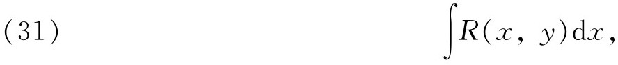
其中R（x，y）是x和y的一个有理函数，y2＝P（x），并且P（x）的次数最少是五。当P（x）是五次或六次时，这种积分在19世纪中期，被称为超椭圆积分。为了强调复值，通常把它写成
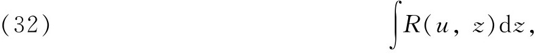
而P（z）通常被写成
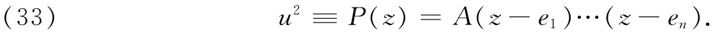
当然u是z的一个多值函数。
在形如（32）的积分中，有一些是处处有穷的。这些基本的积分是
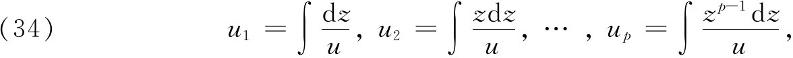
其中u由（33）给出，而p＝（n-2）/2或（n-1）/2，依n是偶或奇而定。对于n＝6 （因而p＝2），有两个这样的积分。一般积分（32）最多有极点和对数奇点，即像log z在z＝0处那样的奇点。那些第一类的积分，即那些处处有穷因而没有奇点的积分，总是可以借助于线性无关的p个积分（34）表示出来。
对于n＝6 （因而p＝2）的情形，第二类积分的范例是
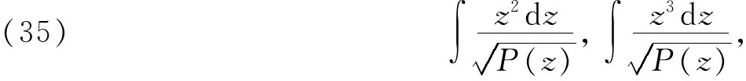
其中P（z）是一个六次多项式。对于n＝6，第一类和第二类积分每个都有四个周期。
超椭圆积分是上限z的函数，如果下限固定的话。假定我们用w表示这样一个函数，那么像椭圆积分的情形一样，可以提出什么是w的反函数z的问题。阿贝尔处理了这个问题，但他没有解决；后来雅可比着手处理了这问题(37)。我们按照雅可比那样来考虑特殊的超椭圆积分
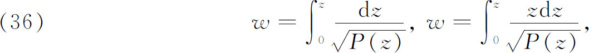
其中P（z）是一个五次或六次多项式。在这里，要将z确定为w的单值函数，经验证明是没有希望的。事实上，雅可比证明，对于五次的P（z），这种积分的单纯反演并不引到一个单演函数。对雅可比说来，反函数是不合理的，因为在每一种情形下z作为w的函数是无穷多值的；而在当时这种函数并不能被很好地理解。
雅可比决定考虑这种积分的组合。在阿贝尔定理（看下面）的指引下（这个定理的叙述他至少是知道的，因为大部分内容已经发表），雅可比的做法如下：考虑方程
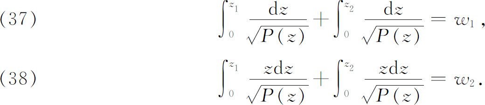
雅可比成功地证明了对称函数z1＋z2和z1z2都是w1和w2的单值函数，具有四个周期的一个系统。于是就得到两个变数w1和w2的函数z1和z2，他还给出了这些函数的一个加法定理。雅可比遗留下许多不完全之处，他说：“对于高斯的那种严密性，我们没有时间。”
推广椭圆与超椭圆积分的研究是由伽罗瓦开始的，不过较重要的开创性步骤是阿贝尔在1826年的论文中做出的。他考虑（32），即
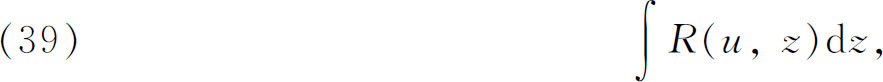
但原来（33）那里的u和z只是由一个多项式如u2＝P（z）联系着，因而代替（33），阿贝尔考虑一个一般的含z和u的代数方程
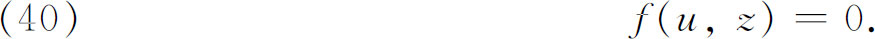
方程（39）和（40）定义一个阿贝尔积分，它包含椭圆与超椭圆积分作为特殊情形。
虽然阿贝尔没有将阿贝尔积分的研究推进很远，但他证明了这方面的一个关键性定理。阿贝尔的基本定理是椭圆积分加法定理（第19章第4节）的一个很宽的推广。这个定理和证明是在他1826年的巴黎论文中，定理的叙述刊在1829年的《克雷尔杂志》(38)上。考虑积分
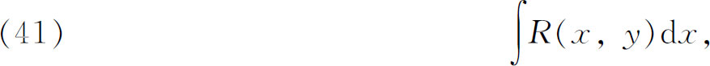
其中x与y由方程f（x，y）＝0联系，f为x和y的一个多项式。在阿贝尔写的文章中，x和y作为实变数，虽然偶尔也以复数出现。非严谨地叙述起来，阿贝尔定理是这样的：“几个具有形式（41）的积分之和可以用p个这样的积分加上一些代数的与对数的项表示出来。另外，这个数p只依赖于方程f（x，y）＝0，而事实上，它就是这个方程的亏格（genus）。”
为了得到一个更精确的叙述，设y是x的代数函数，由下式定义：
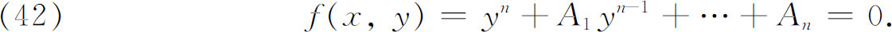
其中Ai是x的多项式，而多项式（42）不可能分解成同样形式的因式。设R（x，y）是x和y的任一有理函数，则任何m个相似积分之和
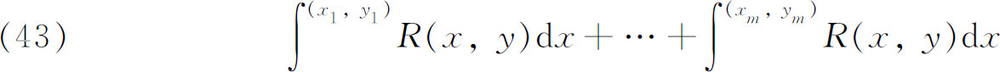
（其下限固定，但是任意）可以用x1，y1，…，xm，ym的有理函数与这种有理函数的对数加上p个积分
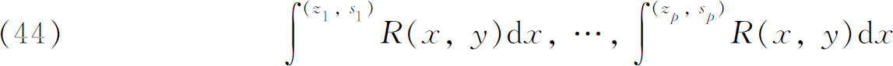
之和来表示，其中z1，…，zp是x的值，可从x1，y1，…，xm，ym作为一个代数方程的根确定出来，这个方程的系数是x1，y1，…，xm，ym的有理函数，而s1，…，sp是由（42）确定的相应的y值，而任一si可以确定为zi及x1，y1，…，xm，ym的一个有理函数。这样用（x1，y1），…，（xm，ym）来确定（z1，s1），…，（zp，sp）的关系必须假定在积分的各阶段中都成立；特别是这些关系确定出后面p个积分的下限，用开始的m个积分的下限表示。数p不依赖于m，不依赖于有理函数R（x，y）的形式，也不依赖于x1，y1，…，xm，ym的值，但它确实依赖于联系y与x的基本方程（42）。
在
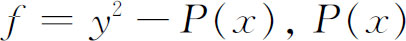
是一个六次多项式而p＝（n-2）/2＝2的超椭圆积分的情况下，阿贝尔定理的主要部分是说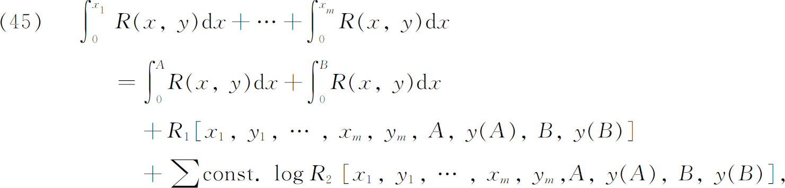
其中R1和R2是它们的变数的有理函数。
阿贝尔对一般的f（x，y）＝0的少数几种情形，实际上计算了数p。虽然他没有看出他的结果的全部意义，但他肯定在黎曼（Georg Friedrich Bernhard Riemann）以前就认识到了亏格的概念并且建立了阿贝尔积分这个科目。他的论文很难懂，部分地是因为他试图利用实际计算结果来证明我们今天称之为存在定理的东西。后来的证明很大地简化了阿贝尔的证明（也看第39章第4节）。阿贝尔没有考虑反问题。所有关于超椭圆积分和阿贝尔积分的反演的工作，一直到黎曼出现，都受到处理多值函数有局限性的方法的妨碍。